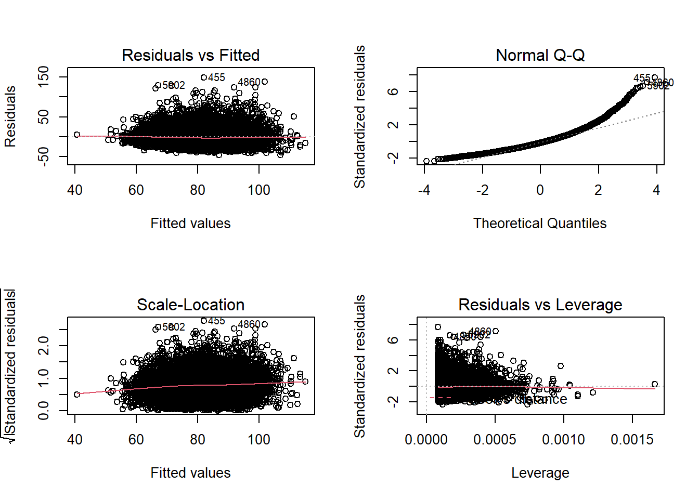
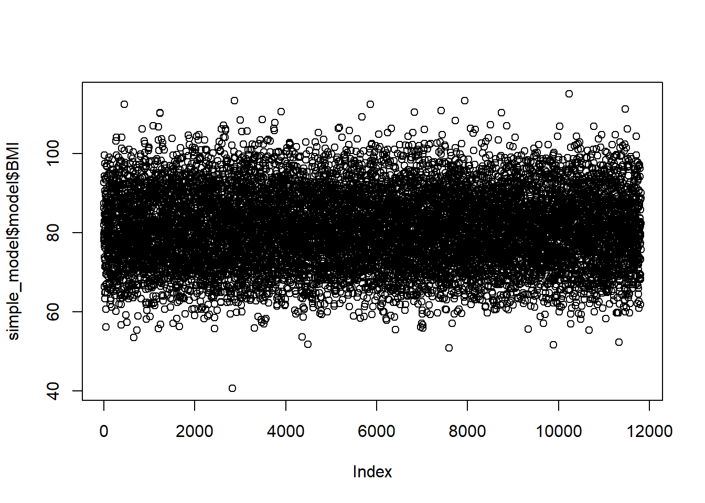
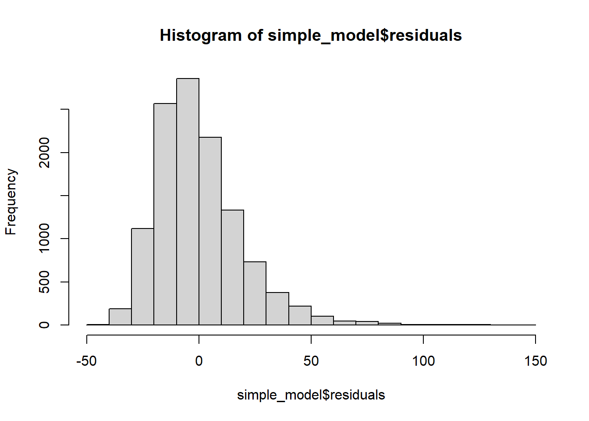
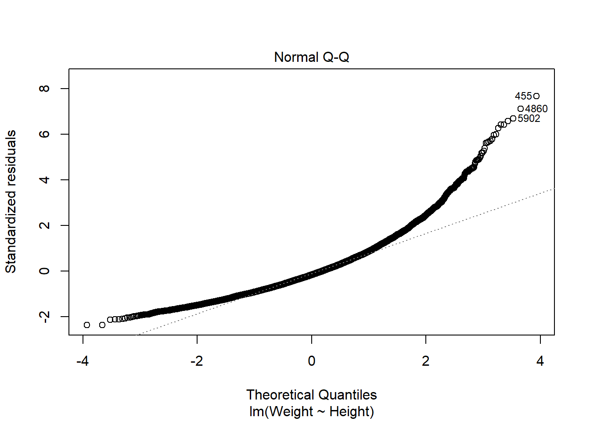
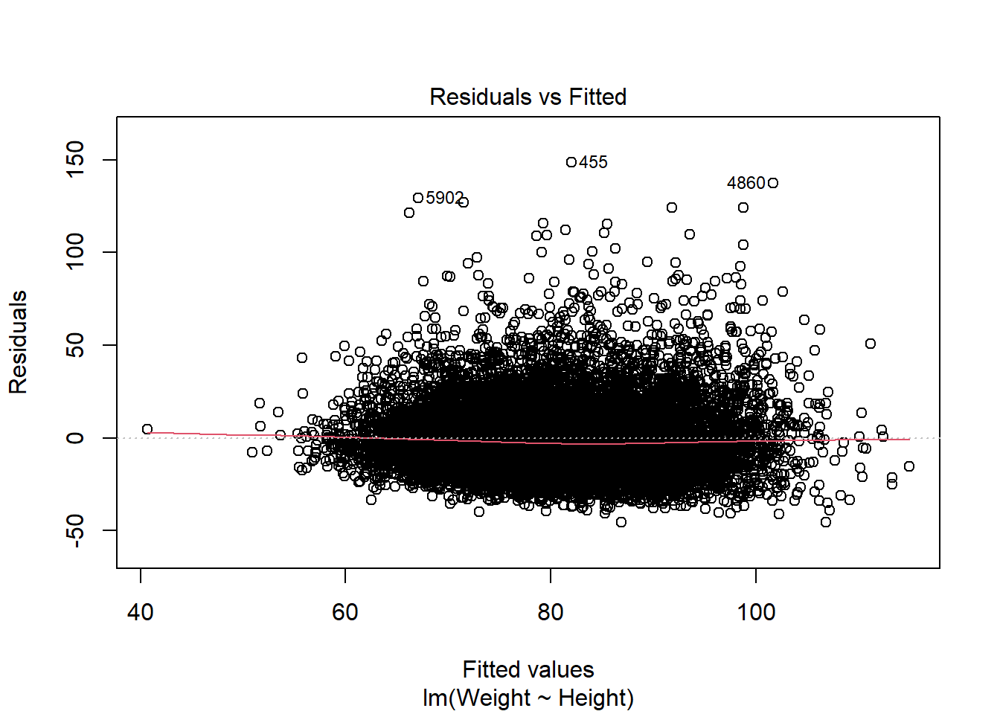
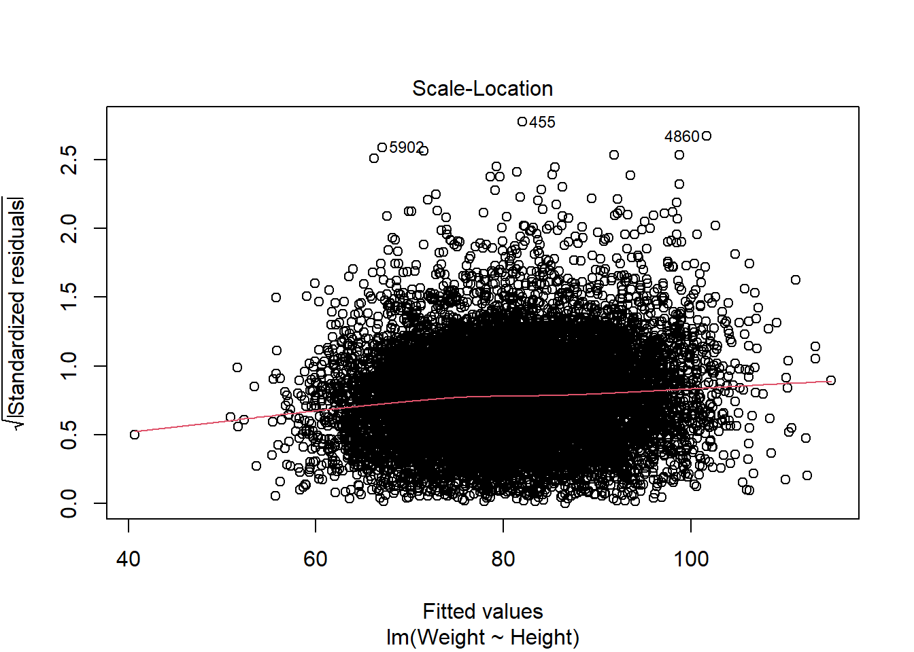
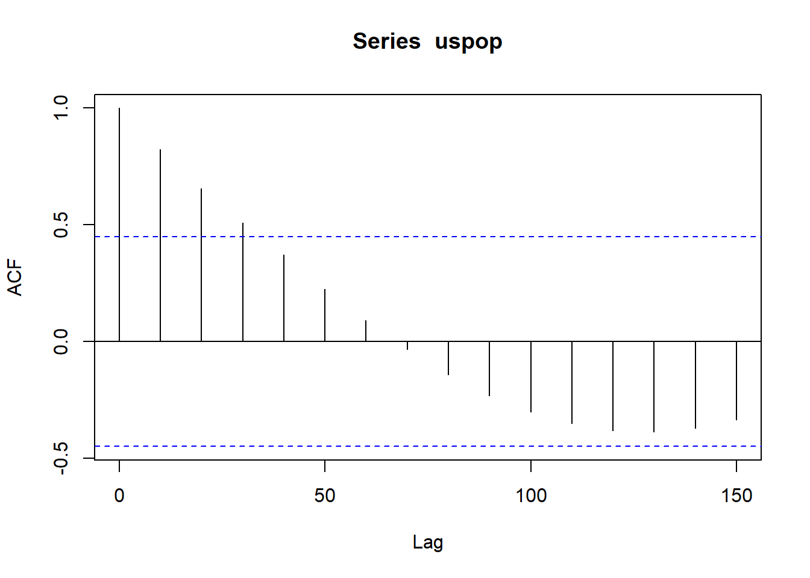
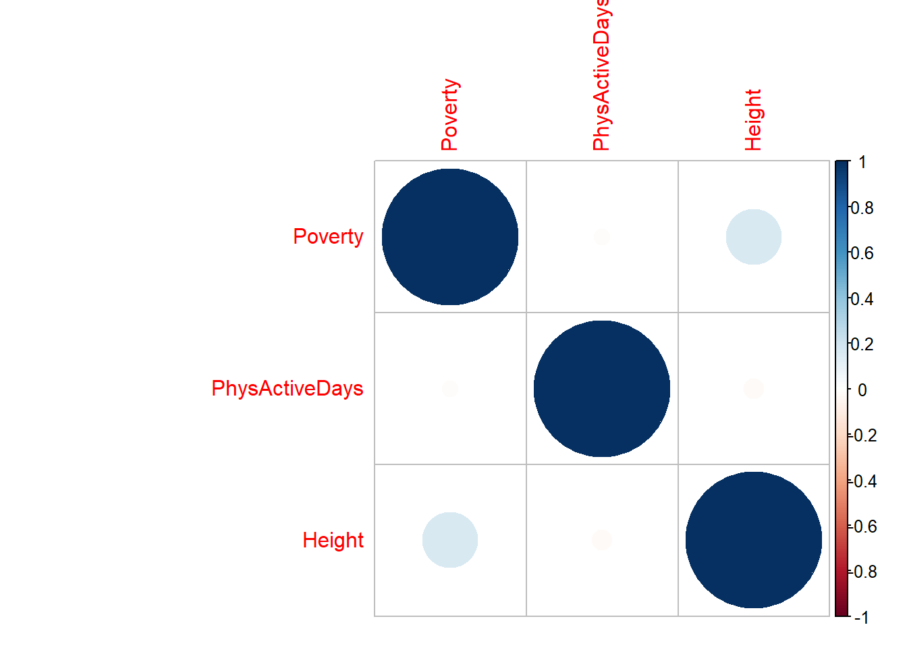

Chapter 13 Testing regression assumptions
In R, regression diagnostics plots (residual diagnostics plots) can be created using the base R function plot().
# define model
simple_model <- lm(Weight ~ Height, data = adults)
# Change the panel layout to 2 x 2 (to look at all 4 plots at once)
par(mfrow = c(2, 2))
# Use plot() function to create diagnostic plots
plot(simple_model)
The diagnostic plots show residuals in four different ways:
Residuals vs Fitted: is used to check the assumptions of linearity. If the residuals are spread equally around a horizontal line without distinct patterns (red line is approximately horizontal at zero), that is a good indication of having a linear relationship.
Normal Q-Q: is used to check the normality of residuals assumption. If the majority of the residuals follow the straight dashed line, then the assumption is fulfilled.
Scale-Location: is used to check the homoscedasticity of residuals (equal variance of residuals). If the residuals are spread randomly and the see a horizontal line with equally (randomly) spread points, then the assumption is fulfilled.
Residuals vs Leverage: is used to identify any influential value in our dataset. Influential values are extreme values that might influence the regression results when included or excluded from the analysis. Look for cases outside of a dashed line.
13.1 Linear relationship
Ideally we want a horizontal line around zero:
# Create the first diagnostic plot
plot(simple_model,1)
# Or plot the observed versus predicted values (again ideally a horizontal line)
plot(simple_model$fitted.values, simple_model$model$BMI)
Looks good so far.
13.2 normality of residuals
Histogram of residuals
hist(simple_model$residuals)
QQ Plot of Residuals
The QQ plot of residuals can be used to visually check the normality assumption. The normal probability plot of residuals should approximately follow a straight line.’ A bow-shaped pattern of deviations from the diagonal indicates that the residuals have excessive skewness (i.e., they are not symmetrically distributed, with too many large errors in the same direction). An S-shaped pattern of deviations indicates that the residuals have excessive kurtosis–i.e., there are either too many or too few large errors in both directions.
plot(simple_model, 2)
The majority of the points fall approximately along the reference line, so we can assume normality. The endpoints are deviating from the straight line, suggesting a heavy-tailed distribution (Distribution is longer and tails are fatter, so there might be outliers).
If we had less than 5k entries, we would perform a Shapiro-Wilk Normality Test. I include the code in case you need it.
# Using pre-installed library(MASS)
# get distribution of studentized residuals (i.e. transform residuals for test)
sresid <- MASS::studres(simple_model) #using MASS package function to transform data easily
shapiro.test(sample(sresid,5000)) # p value non-sign: normal distribution of residuals##
## Shapiro-Wilk normality test
##
## data: sample(sresid, 5000)
## W = 0.92894, p-value < 2.2e-1613.3 Testing the Homoscedasticity Assumption
13.3.0.1 Plotting residuals
Look at plots of residuals versus time and residuals versus predicted (i.e. fitted) value, and be alert for evidence of residuals that are getting larger (i.e., more spread-out) either as a function of time or as a function of the predicted value. (To be really thorough, you might also want to plot residuals versus some of the independent variables.)’
plot(simple_model, 1)
Scale-location plot / spread-location plot (same as above, just using standardised residuals) ‘We want a more or less horizontal line with more or less equally spread points around.’
plot(simple_model, 3) The red line does deviate slightly from being horizontal. There is no clear sign of heteroscedasticity (no clear deviation from horizontal line, no funnel shape of errors being larger where fitted values get larger).
13.3.0.2 Breusch-Pagan test
# Breusch-Pagan test
lmtest::bptest(simple_model)##
## studentized Breusch-Pagan test
##
## data: simple_model
## BP = 57.792, df = 1, p-value = 2.914e-1413.3.0.3 White’s test
=> This is a special case of the (simpler) Breusch-Pagan test.
The only difference between White’s test and the Breusch-Pagan is that its auxiliary regression doesn’t include cross-terms or the original squared variables. To show this more clearly, we will use two rather than one regressor in this code example.
# General formula:
# m <- lm(A ~ B + C, data = dataset)
# bptest(m, ~ B*C + I(B^2) + I(C^2), data = dataset)
BMI2_model <- lm(BMI ~ Poverty + PhysActiveDays, data = adults)
bptest(BMI2_model, ~ Poverty*PhysActiveDays + I(Poverty^2) + I(PhysActiveDays^2), data = adults)##
## studentized Breusch-Pagan test
##
## data: BMI2_model
## BP = 42.143, df = 5, p-value = 5.512e-08The test suggests heteroscedasticity (i.e. residuals having a non-constant variance). The plots of residuals were not too worrying though. If we were quite concerned about heteroscedasticity, we could try using logarithmic or square root transformation on the response variable to reduce heteroscedasticity.
13.4 Test for autocorrelation (Violations of independence)
Best test for residual autocorrelation: Inspect autocorrelation plot of the residuals. Pay especially close attention to significant correlations at the first couple of lags and around seasonal periods, because these are probably not due to chance.
Given that there is no time variable in the dat, we will use an inbuilt data set, just for this function demo using population count from the US census:
acf(uspop, lag.max = 15, plot = TRUE)
13.5 Collinearity
A correlation matrix is probably the easiest starting point:
model_corr_matrix <- cor(nhanes %>%
select(Poverty, PhysActiveDays, Height),
use = "pairwise.complete.obs")
model_corr_matrix## Poverty PhysActiveDays Height
## Poverty 1.00000000 -0.01352413 0.16476155
## PhysActiveDays -0.01352413 1.00000000 -0.02127384
## Height 0.16476155 -0.02127384 1.00000000There are several packages available for visualizing a correlation matrix in R. One of the most common is the corrplot function.
Positive correlations are displayed in a blue scale while negative correlations are displayed in a red scale. Probably not needed for our examples, but useful if you have more variables:
corrplot::corrplot(model_corr_matrix)
13.6 Multicollinearity
Collinearity happens when two or more explanatory variables are correlated with each other. However, there is an extreme situation, called multicollinearity, where collinearity exists between three or more variables even if no pair of variables has a particularly high correlation. This means that there is redundancy between explanatory variables.
Whilst collinearity can be detected with a correlation matrix, multicollinearity is not as easy to detect. The Variance Inflation Factor (VIF) can be used to find how much the variance of a regression coefficient is inflated due to multicollinearity in the model. The smallest possible value is one, indicating no multicollinearity. A value which exceeds 5 or 10 indicates a problematic amount of multicollinearity in the data. In R we use the vif() function from the car package to detect multicollinearity in a multiple regression model (where the response variable is ozone and all explanatory variables are added):
# Define a regression model and save the model object as "BMI3_model"
BMI3_model <- lm(BMI ~ Poverty + PhysActiveDays + Height, data = adults)
# Use the variance inflation factor from the car package
car::vif(BMI3_model)## Poverty PhysActiveDays Height
## 1.013563 1.001323 1.014225All the variance inflation values are fairly close to one, suggesting our model doesn’t have multicollinearity. If an explanatory variable has a high VIF, we usually remove that explanatory variable from our model. However, we need to look at how removing that variable affects the model.